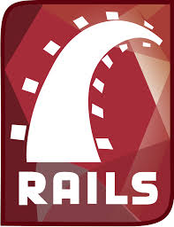

In-depth primer on Ruby and Rails, “What is Ruby on Rails?” Explains what is important about Ruby and Rails. This article introduces basic concepts of web development, explains why Ruby on Rails is a popular framework for web development, and looks at Rails from several perspectives so you’ll be prepared to learn more about Rails. You don’t need a technical background to read this article. Technical terms are introduced and explained in easy-to-understand language. If you are an experienced web developer, you’ll get an introduction to the specifics of Rails, with fundamental concepts explained systematically and comprehensively.
Rails Rails is a software library that extends the Ruby programming language. David Heinemeier Hansson is its creator. He gave it the name “Ruby on Rails,” though it is often just called “Rails.” It is software code that is added to the Ruby programming language. Technically, it is a package library (specifically, a RubyGem), that is installed using the operating system command-line interface. Rails is a framework for building websites. As such, Rails establishes conventions for easier collaboration and maintenance. These conventions are codified as the Rails API (the application programming interface, or directives that control the code). The Rails API is documented online and described in books, articles, and blog posts. Learning Rails means learning how to use the Rails conventions and its API. Read on for a more detailed look at Rails. First, we’ll look at why Rails uses the Ruby programming language. We’ll consider why Rails is popular, review some basic concepts, then look at Rails from six different perspectives to understand it better.
